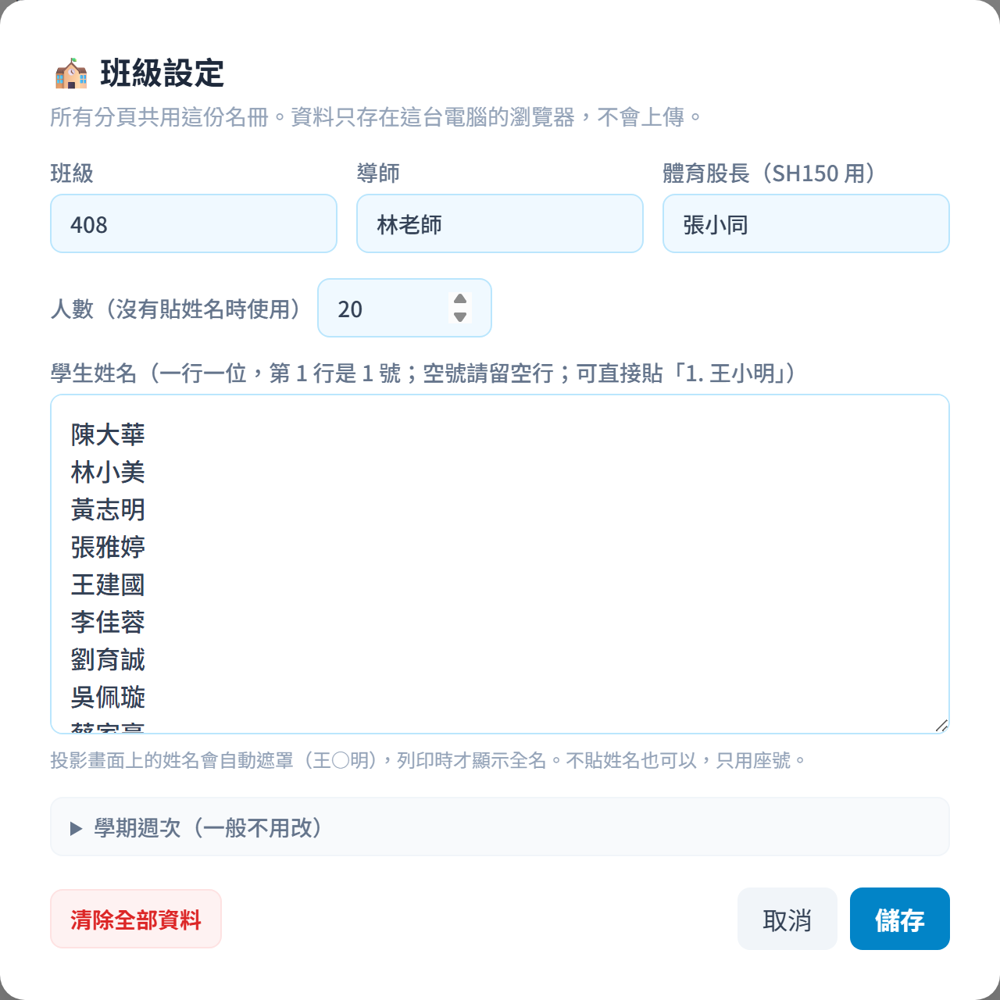
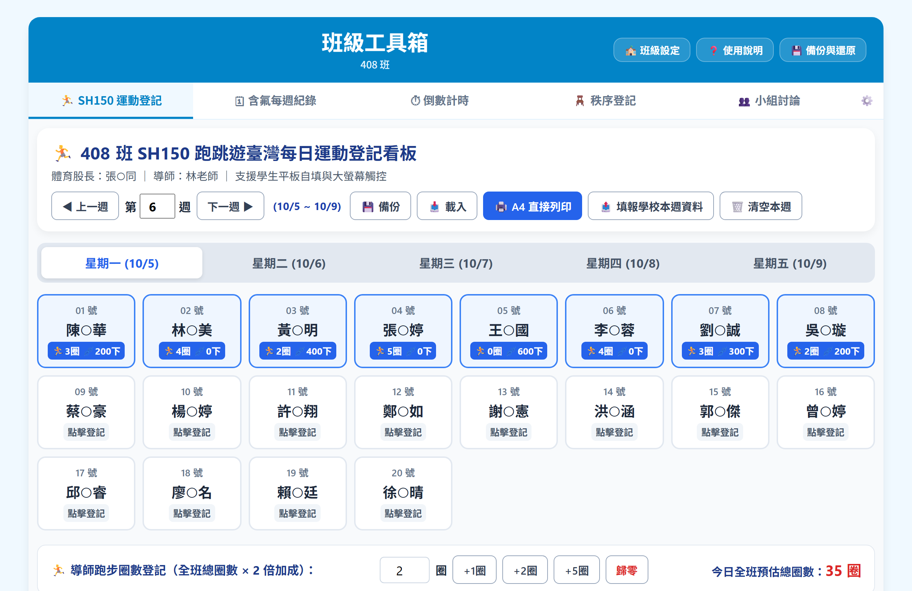
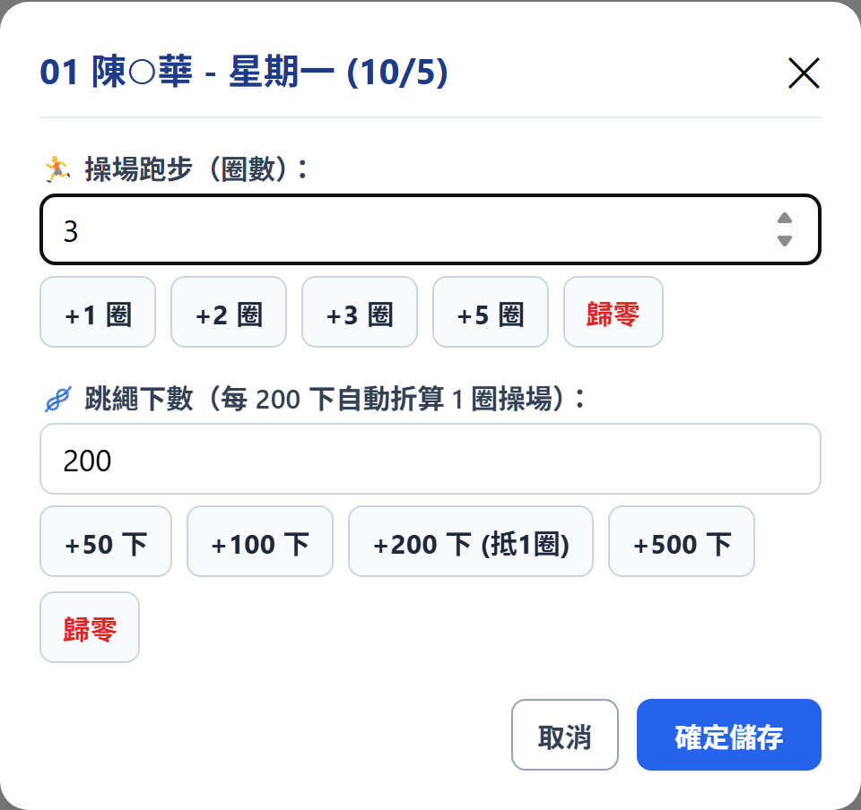
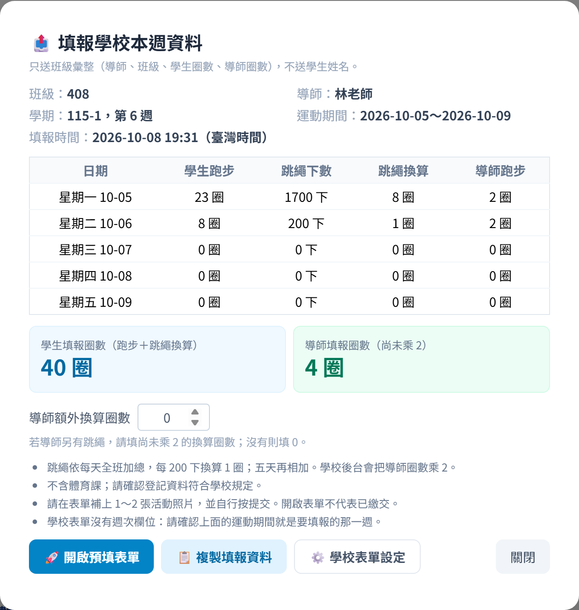
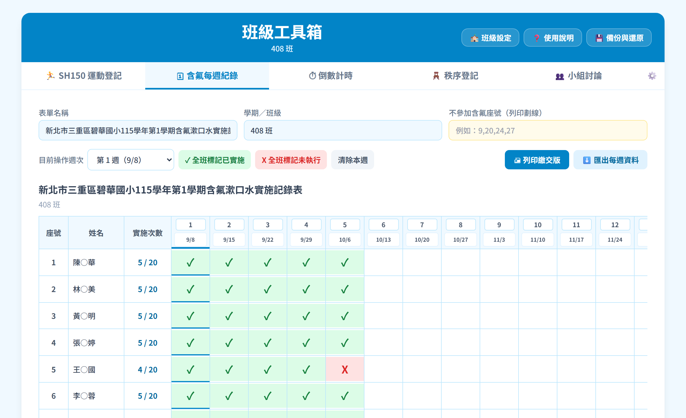
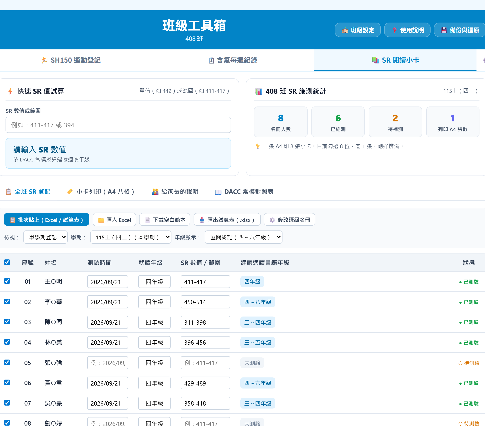
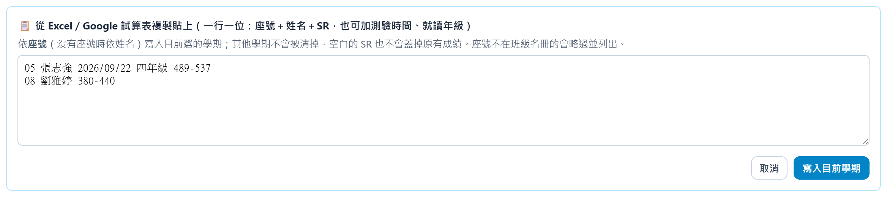
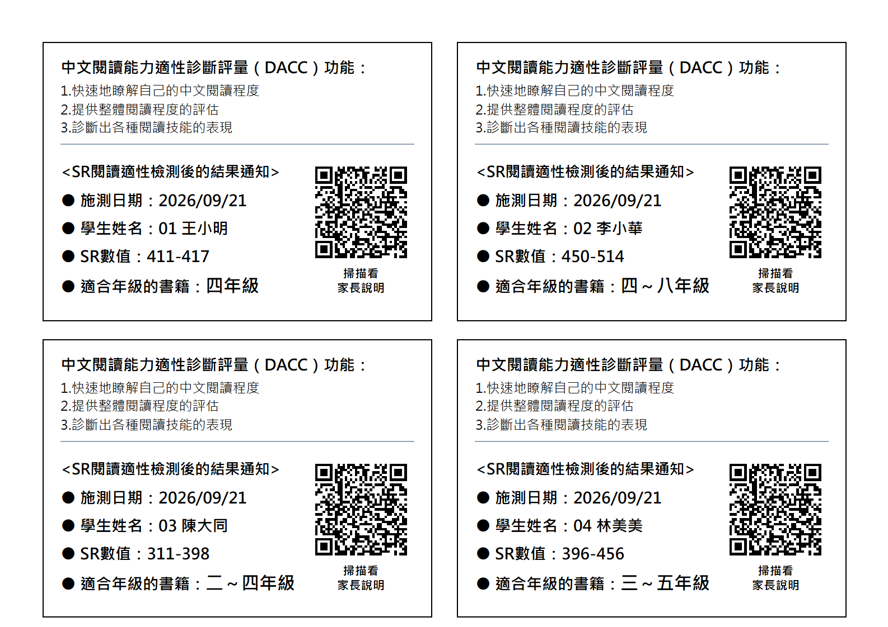
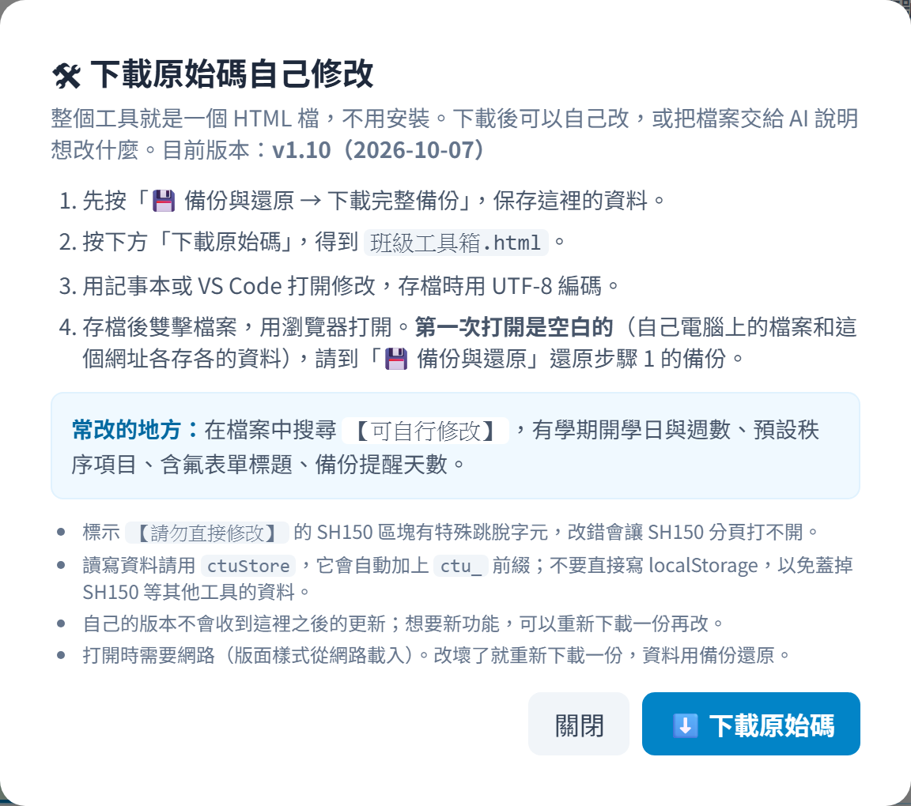

1. 這是什麼
班級工具箱是一個打開網頁就能用的班級小工具，適合放在教室大屏上使用，不用安裝、不用登入。
- 包含：SH150 運動登記（含每週填報學校表單）、含氟每週紀錄、SR 閱讀小卡（DACC 閱讀測驗結果換算與列印）。
- 資料只存在這台電腦的瀏覽器裡，不會上傳到任何地方，其他人看不到。
- 也因為這樣，換一台電腦或換一個瀏覽器，資料不會跟過去，要靠「備份與還原」搬（見第 7 節）。
- 投影畫面上的學生姓名會自動遮住中間的字（例如「王○明」），列印與複製報告時才顯示全名。
建議固定用同一台教室電腦、同一個瀏覽器（例如 Chrome）開啟，並把網址加入書籤。
2. 第一次使用
第一次打開時會自動跳出「🏫 班級設定」。之後要修改，按畫面右上角的 🏫 班級設定。

▲「🏫 班級設定」視窗：班級請填純數字（例如 408）、名冊可直接貼上，支援自動遮罩
| 欄位 | 怎麼填 |
|---|
| 班級 | 填數字，例如 408（不要寫「四年八班」或「408 班」）。學校填報表單只認這種格式。 |
| 導師 | 填真實姓名。學校填報表單會用到。 |
| 體育股長 | SH150 列印表會用到，可以不填。 |
| 人數 | 沒有貼姓名時，依這個人數產生座號 1～N。 |
| 學生姓名 | 一行一位，第 1 行是 1 號。可以直接從 Excel 或學籍系統複製貼上，「1. 王小明」這種有座號的格式也可以，會自動去掉座號。空號請留一個空行，不要直接刪掉那一行，不然後面的人座號會往前移。 |
已經在用舊的 SH150 通用版？
如果這台電腦用過 SH150 通用版，第一次打開時會問要不要複製一份資料過來：
- 按 帶入：班級設定與 SH150 紀錄複製到這裡。舊網址的資料不會被改動。
- 帶入後兩邊各自獨立：之後在這裡登記的，舊網址看不到，反之亦然。建議帶入後就改用這裡。
- 按 不要，從空白開始：以後不會再問。之後想帶入，可以在「🏫 班級設定」按「從這台電腦的 SH150 帶入」。
3. 🏃 SH150 運動登記

▲ SH150 運動登記主畫面：切換週次與星期幾、點選學生卡片登記、下方記錄導師圈數
- 用 ◀ 上一週／下一週 ▶ 或直接輸入週次，選要登記的那一週。打開時會自動跳到本週。
- 點星期一～星期五切換日期，預設是今天。
- 點學生卡片，輸入跑步圈數和跳繩下數（可用 +1圈、+200下 等快速按鈕），按儲存。

▲ 學生卡片登記彈窗：點選快速增減按鈕輸入圈數與跳繩，按「確定儲存」
- 下方「導師每日跑步圈數」填導師當天跑的圈數。
- 計算規則：跳繩依每天全班加總，每 200 下換算 1 圈；導師圈數乘 2 計入班級總圈數。
- 🖨️ A4 直接列印：印出體育組格式的 A4 紙本（列印時顯示全名）。
- 💾 備份／📥 載入：只備份或載入 SH150 這一個分頁（也能載入舊 SH150 網址的備份檔）。要備份全部分頁請用第 7 節的「完整備份」。
- 🗑️ 清空本週：清除這一週的登記，其他週不受影響。
4. 📤 填報學校本週資料
每週五放學前要填報學校的 SH150 Google 表單。這個按鈕會幫你算好數字並填進表單，你只要補照片、按提交。
步驟
- 在 SH150 分頁選好要填報的那一週，按 📤 填報學校本週資料。
- 核對畫面上的內容：班級、導師、週次與日期、每天明細，以及兩個數字：
- 學生填報圈數（跑步＋跳繩換算）
- 導師填報圈數（尚未乘 2）：學校後台會自動乘 2，這裡不要先乘。
- 如果出現黃色提醒，看完後勾選「我已核對」。
- 按 🚀 開啟預填表單，學校表單會在新分頁打開，導師、班級、兩個圈數、填報時間都已經填好。
- 在 Google 表單：用學校帳號登入 → 再看一次數字 → 上傳 1～2 張活動照片 → 自己按「提交」。

▲「📤 填報學校本週資料」核對視窗：核對學生與導師圈數無誤後，勾選「我已核對」即可按「🚀 開啟預填表單」
按「開啟預填表單」不代表已經繳交。一定要在 Google 表單按「提交」才算完成。工具看不到學校有沒有收到。
其他說明
- 導師另有跳繩：在「導師額外換算圈數」填尚未乘 2 的換算圈數。這個數字只用在這一次填報，不會存進紀錄。
- 不含體育課：工具無法分辨哪些是體育課的運動，請確認登記的內容符合學校規定。
- 按鈕是灰色的：看紅色框的原因，通常是班級不是
408 這種格式，或導師還是「OOO 老師」。到「🏫 班級設定」改好就可以了。
- 表單沒有自動填好，或學校換了表單：按 📋 複製填報資料，對照文字自己填；可以按「開啟空白表單」。
- 新分頁沒有出現：按畫面上的「點這裡再次開啟」。
- 學校表單沒有「週次」欄位，請確認畫面上的「運動期間」就是要填報的那一週。
5. 🗓 含氟每週紀錄

▲ 含氟每週紀錄畫面：上方有一鍵全班標記按鈕，表格點擊循環切換 ✓ 已實施 / X 未執行，具備橫向捲軸
- 每位學生一列、每週一格。點格子會循環切換：空白 → ✓ 已實施 → X 未執行。
- 「目前操作週次」選好後，可以按 ✓ 全班標記已實施、X 全班標記未執行 或 清除本週。
- 「不參加含氟座號」填座號（例如 9,20），列印時那幾列會劃線。
- 表單名稱、學期／班級、每週日期都可以直接修改。
- 🖨 列印繳交版：印出 A4 直式繳交表。⬇️ 匯出每週資料：只匯出含氟資料。
- 表格很寬時，表格上方和下方都有橫向捲軸可以拉。
6. 📚 SR 閱讀小卡
學生做完「中文閱讀能力適性診斷評量（DACC）」後，把 SR 值登記進來，工具會換算建議適讀書籍年級，並印成 A4 一頁 8 張的結果通知小卡，讓學生帶回家。

▲ SR 閱讀小卡：上方是快速試算與施測統計，下方表格依座號登記，輸入 SR 後自動換算適讀年級
登記 SR
- 名冊直接用「🏫 班級設定」的學生，不用另外輸入。要改名冊按 ⚙️ 修改班級名冊。
- 「學期」選要登記的學期，例如「115上（四上）」。括號裡的年級是依班級號碼推算的，所以班級請填 408 這種數字。
- 在 SR 數值／範圍欄輸入單一數值（如
394）或範圍（如 411-417），按 Enter 會跳到下一位同學，可以連續輸入全班。
- 「年級顯示」可選區間簡記（四～八年級，建議印小卡用）或完整列出。
- 「檢視」切到跨學期比較，可以並排看各學期的 SR。「最近兩次差異」只是兩次數值中點相減，只供老師參考，不會印在小卡上。
從試算表一次貼上
按 📋 批次貼上（Excel／試算表），一行一位貼上「座號 姓名 SR」，也可以多帶測驗時間與就讀年級，按 寫入目前學期。

▲ 批次貼上：欄位順序不拘，工具會自動判斷哪個是座號、日期、年級和 SR
- 依座號寫入，只寫入目前選的學期，其他學期的成績不會被清掉；空白或「-」不會蓋掉已有的成績。
- 座號不在班級名冊、或座號相同但姓名不一樣時，會跳出清單提醒你檢查。
- 📥 匯出試算表（.xlsx） 會匯出全班各學期的 SR（含全名），之後可用 📁 匯入 Excel 匯回來。
列印小卡
- 按 只勾選本學期已施測，排除還沒測的同學。
- 按 🖨️ 列印已勾選的小卡，列印時選 A4 直式、邊界「無」。也可以另存成 PDF。

▲ 結果通知小卡（A4 一頁 8 張）：列印時顯示全名，右邊的 QR Code 給家長掃描看說明，沿框線剪開發給學生
- 「小卡列印」頁可以改標題、施測日期、框線樣式，或選「本學期結果＋前一次 SR」。
- 小卡右邊的 QR Code 預設連到家長說明頁（什麼是 SR、小卡怎麼看、怎麼選書，不含任何學生資料）。想連到自己的說明，在「小卡右邊的說明 QR Code 連結」貼上網址；清空就不印 QR Code。
- 最後一頁沒排滿的格子會印成空白小卡，可以手寫補測的同學。
給家長
- 「給家長的說明」頁有 LINE 班群訊息範本，會自動帶入班級與導師姓名，可以先修改再按「📋 複製文字」。
- 🖨️ 列印家長說明信（A4）：一頁說明什麼是 SR 值、怎麼依適讀年級選書。
SR 值是閱讀能力的參考區間，不是考試成績。小卡上只列數值和適讀年級，不寫「進步」「退步」這類判斷。
7. 💾 備份與還原（重要）
資料只存在這台電腦的瀏覽器裡。清除瀏覽紀錄、重灌電腦、換電腦，資料都會不見。請養成定期備份的習慣。
▲「💾 備份與還原」視窗：定期按「⬇️ 下載完整備份」保存 json 備份檔；換電腦時按「⬆️ 從備份檔還原」
- 按右上角 💾 備份與還原 → ⬇️ 下載完整備份，會下載一個「班級工具_班級_日期.json」檔，包含所有分頁的資料。建議存到雲端硬碟。
- 超過 14 天沒備份時，畫面左下角會出現提醒，按「立即備份」即可。
- 換電腦：在舊電腦下載完整備份 → 新電腦打開工具 → 「💾 備份與還原」→ ⬆️ 從備份檔還原。
- 還原會覆蓋目前的全部資料。還原前工具會先自動下載一份目前資料的備份，再請你確認一次。
- 「🏫 班級設定」最下方的「清除全部資料」：要輸入班級名稱才能執行，也會先下載備份。
8. 進階：自己修改工具
「💾 備份與還原」最下方的 🛠 下載原始碼，自己修改這個工具，可以下載整個工具（一個 HTML 檔），用記事本、VS Code 或請 AI 幫忙修改。

▲「🛠 下載原始碼自己修改」視窗：從備份視窗最下方進入，點擊「⬇️ 下載原始碼」即可取得單檔原始碼
- 常改的地方，在檔案裡搜尋「【可自行修改】」：學期開學日與週數、含氟表單標題、備份提醒天數。
- 自己電腦上打開的檔案和網址版各存各的資料，請先下載完整備份，再到自己的版本還原。
- 自己改的版本收不到之後的更新。
9. 常見問題
- 資料不見了？
- 先確認是不是同一台電腦、同一個瀏覽器、同一個網址。換了任何一個，資料都不會出現。如果有備份檔，用「從備份檔還原」救回。
- 網站更新後，我的資料還在嗎？
- 在。更新只換掉網頁程式，資料存在你的瀏覽器裡，不受影響。
- 看不到新功能？
- 重新整理頁面（Ctrl＋F5）。頁面最下方會顯示目前版本，例如「班級工具箱 v1.11」。
- 其他老師看得到我的資料嗎？
- 看不到。資料只在你的瀏覽器裡，不會上傳。
- 學生姓名為什麼是「王○明」？
- 為了投影時保護學生隱私，畫面上會遮住中間的字。列印、複製報告、匯出 CSV 時會用全名。
- 填報按鈕按了沒反應？
- 重新整理頁面再試一次。如果是灰色的，看紅色框的原因（通常是班級或導師姓名要改）。
- 可以用手機或平板嗎？
- 可以，畫面會自動調整。但資料只存在那台裝置上，跟教室電腦不會同步。